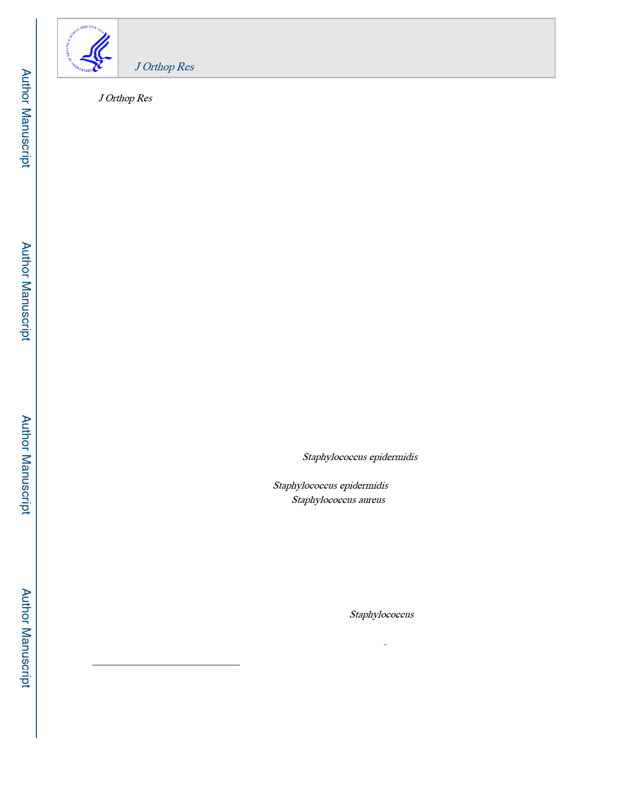

HHS Public Access
Author manuscript
J Orthop Res. Author manuscript; available in PMC 2021 April 01.
Published in final edited form as:
J Orthop Res. 2020 April ; 38(4): 852–860. doi:10.1002/jor.24512.
Biofilm producing Staphylococcus epidermidis (RP62A strain)
inhibits osseous integration without osteolysis and
histopathology in a murine septic implant model
Takuya Tomizawa1, Masahiro Ishikawa1,2, Sheila N. Bello-Irizarry2, Karen L. de Mesy
Bentley2,3, Hiromu Ito1, Stephen L. Kates4, John L. Daiss2, Christopher Beck2,5, Shuichi
Matsuda1, Edward M. Schwarz2,5, Kohei Nishitani1,2,6
1Department of Orthopaedic Surgery, Graduate School of Medicine, Kyoto University, Kyoto,
Japan
2Center for Musculoskeletal Research, University of Rochester Medical Center, Rochester, New
York, USA.
3Pathology and Laboratory Medicine, University of Rochester Medical Center, Rochester, New
York, USA.
4Department of Orthopaedic Surgery, Virginia Commonwealth University School of Medicine,
Richmond, VA, USA.
5Department of Orthopedics and Rehabilitation, University of Rochester Medical Center,
Rochester, New York, USA
Abstract
Despite its presence in orthopaedic infections, Staphylococcus epidermidis’s ability to directly
induce inflammation and bone destruction is unknown. Thus, we compared a clinical strain of
methicillin-resistant biofilm-producing Staphylococcus epidermidis (RP62A) to a highly virulent
and osteolytic strain of methicillin-resistant Staphylococcus aureus (USA300) in an established
murine implant-associated osteomyelitis model. Bacterial burden was assessed by colony forming
units (CFUs), tissue damage was assessed by histology and micro-computer tomography (μCT),
biofilm was assessed by scanning electron microscopy (SEM), host gene expression was assessed
by quantitative polymerase chain reaction (qPCR), and osseous integration was assessed via
biomechanical push-out test. While CFUs were recovered from RP62A contaminated implants and
surrounding tissues after 14 days, the bacterial burden was significantly less than USA300-
infected tibiae (p<0.001). Additionally, RP62A failed to produce any of the gross pathologies
induced by USA300 (osteolysis, reactive bone-formation, Staphylococcus abscess communities,
marrow necrosis and biofilm). However, fibrous tissue was present at the implant-host interface,
and rigorous SEM confirmed the rare presence of cocci on RP62A-contaminated implants. Gene
6To whom correspondence should be addressed, Kohei Nishitani M.D., Ph.D., Department of Orthopaedic Surgery, Graduate School
of Medicine, Kyoto University, 54 Shogoin Kawahara Cho, Sakyo, Kyoto, Japan, nkohei@kuhp.kyoto-u.ac.jp | Phone: +81(75)
366-7734.
Authors Contribution
Designed experiments by MI, SNB, SLK, JLD, EMS, and KN, performed experiments by TT, MI, SNB, KLM, and KN, data analysis
by TT, MI, SNB, JLD, CB, EMS, KN, writing and editing of manuscript by TT, MI, HI, SLK, JLD, SM, EMS, and KN. All authors
have read and approved the final submitted manuscript.